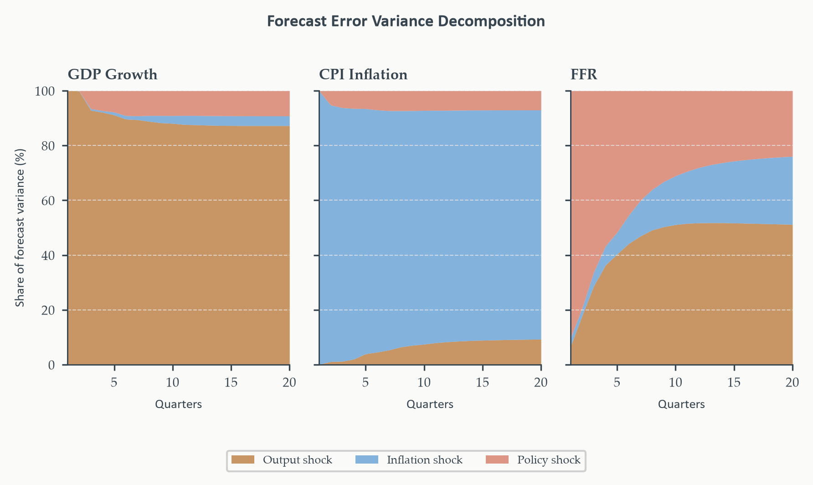

Vector Autoregressions and Structural VARs
Chapter 7
2026-08-27
From One Variable to Many
Chapter 6 gave us a complete toolkit for a single series — model it, test its parameters for stability, forecast it honestly. What can this toolkit never ask?
- How does a shock to one variable propagate to another?
- Did a policy change shift two series simultaneously — and if so, which one moved first?
- Is the predictive relationship between two series genuinely two-directional?
Every question above requires modeling variables jointly, not one at a time. This chapter builds that framework from the ground up — starting from a warning Chapter 3 already gave us, and following it to its logical conclusion.
Why This Chapter Matters
One model, four analytical outputs, built in sequence:
- The reduced-form VAR — every variable depends on lags of every variable, itself included
- Granger causality — does one variable’s past help predict another, beyond what its own past already tells us?
- The structural VAR (Cholesky) — turning correlated statistical residuals into economically interpretable shocks
- Impulse responses and variance decomposition — tracing a shock’s full dynamic path, and asking how much of each variable’s uncertainty traces back to each shock
Running example: GDP growth, CPI inflation, and the federal funds rate — the minimal system needed to ask how monetary policy actually propagates through the real economy.
Today’s Roadmap
- Why univariate models are not enough
- The reduced-form VAR
- Lag selection
- Granger causality
- SVAR identification and the Cholesky decomposition
- Impulse response functions
- Forecast error variance decomposition
- VARX and when variables are \(I(1)\)
Why Univariate Models Are Not Enough
Section 1
A Warning We Already Received
Chapter 3 added the federal funds rate to an ARMAX model for jobless claims — and flagged immediately that if the funds rate itself responds to labor market conditions, the estimated coefficient is contaminated. We called that estimate a reduced-form mixture, not a causal parameter.
That warning has a natural follow-up we never answered: if we can’t safely treat one variable as exogenous when it isn’t, what do we do instead? Give up the single equation entirely, and model every variable jointly.
A Structural System That OLS Cannot Estimate
Output growth \(g_t\) and inflation \(\pi_t\), with genuine two-way dependence — the Phillips curve, in its simplest form:
\[ \begin{aligned} g_t &= \alpha_{10}-\alpha_{12}\pi_t+\gamma_{11}g_{t-1}+\gamma_{12}\pi_{t-1}+\varepsilon^g_t \\ \pi_t &= \alpha_{20}-\alpha_{21}g_t+\gamma_{21}g_{t-1}+\gamma_{22}\pi_{t-1}+\varepsilon^\pi_t \end{aligned} \]
Each equation has a contemporaneous term on the right-hand side of the other. \(\pi_t\) appears directly in the growth equation; \(g_t\) appears directly in the inflation equation. Neither equation can be estimated by OLS — \(\pi_t\) is correlated with \(\varepsilon^g_t\) through the second equation, and symmetrically for \(g_t\) in the first. This is simultaneity bias, the multivariate cousin of the endogeneity problem Chapter 3 flagged.
The Way Out: Solve for the Reduced Form
If the structural system can’t be estimated directly, is there a version of it that can?
Solve the two-equation system for \(g_t\) and \(\pi_t\) in terms of only lagged variables and composite error terms — algebra, not new assumptions.
What emerges is a system where every right-hand side variable is predetermined — no contemporaneous terms, nothing correlated with the current-period disturbance. This reduced form is estimable by OLS, equation by equation. It’s also exactly what a VAR is: not a new object, but the natural destination of solving out a simultaneous structural system.
The cost: reduced-form coefficients are mixtures of the structural parameters \(\alpha,\gamma\) — not directly interpretable until Section 5 undoes that mixing.
What the System Actually Looks Like
The reduced form of the two-equation structural system from the previous slide — output growth \(g_t\) and inflation \(\pi_t\) — written as a VAR(1):
\[ \begin{aligned} g_t &= c_1+a_{11}g_{t-1}+a_{12}\pi_{t-1}+u_{1,t} \\ \pi_t &= c_2+a_{21}g_{t-1}+a_{22}\pi_{t-1}+u_{2,t} \end{aligned} \]
Both equations share the same two lagged regressors on the right — only the coefficients differ. \(g_t\)’s equation includes lagged \(\pi\), not just its own past; \(\pi_t\)’s equation includes lagged \(g\). No contemporaneous terms remain — this is exactly the reduced form the previous slide promised, now estimable by OLS. Section 2 develops the general \(n\)-variable case; the running example this chapter actually works with adds a third variable, the funds rate, once that machinery is in place.
The Reduced-Form VAR
Section 2
The VAR(\(p\)): Equation by Equation
For \(n\) variables stacked in \(\mathbf{y}_t\), each equation regresses one variable on \(p\) lags of every variable in the system, itself included:
\[ y_{i,t} = c_i+\sum_{j=1}^n\sum_{\ell=1}^p a_{ij,\ell}\,y_{j,t-\ell}+u_{i,t}, \qquad i=1,\ldots,n \]
Every variable is both dependent and explanatory, simultaneously. GDP growth’s equation includes lags of GDP growth, inflation, and the funds rate. Inflation’s equation does the same. The whole point: no variable is privileged as purely “exogenous” — everything feeds back on everything.
The VAR(\(p\)): Compact Matrix Form
\[ \mathbf{y}_t = \mathbf{c}+\mathbf{A}_1\mathbf{y}_{t-1}+\mathbf{A}_2\mathbf{y}_{t-2}+\cdots+\mathbf{A}_p\mathbf{y}_{t-p}+\mathbf{u}_t \]
Each \(\mathbf{A}_\ell\) is \(n\times n\): entry \((i,j)\) is the effect of variable \(j\)’s \(\ell\)-th lag on variable \(i\). \(\mathbf{u}_t\sim WN(\mathbf{0},\boldsymbol\Sigma_u)\) — a vector white noise, with \(\boldsymbol\Sigma_u\) typically not diagonal: the reduced-form residuals across equations are correlated, exactly what Section 5’s identification problem confronts.
For \(n=3\), \(p=2\): each equation has \(np+1=7\) parameters, \(n(np+1)=21\) total — the parameter count that makes lag selection (Section 3) genuinely consequential.
Why OLS Still Works, Equation by Equation
Every right-hand side variable is a lag — nothing contemporaneous. Why does that matter for estimation?
Every regressor is predetermined and uncorrelated with the current innovation \(\mathbf{u}_t\). OLS applied to each equation separately is consistent — and under Gaussian innovations, equivalent to maximum likelihood. statsmodels estimates the whole system at once internally, but the equation-by-equation OLS intuition is exact and is the right mental model for what the estimator is actually doing.
The Companion Matrix, Generalized
Chapter 1 wrote an AR(\(p\)) as a first-order system via the companion matrix, with \(p\) characteristic roots. What changes when there are \(n\) variables instead of one?
\[ \boldsymbol\xi_t = \mathbf{F}\boldsymbol\xi_{t-1}+\tilde{\mathbf{u}}_t \]
\(\mathbf{F}\) is \(np\times np\) — stacking \(p\) lags of \(n\) variables into one first-order vector system. Its eigenvalues are the VAR’s \(np\) characteristic roots. Stability requires every one of them inside the unit circle, exactly Chapter 1’s condition, now \(np\) conditions instead of \(p\).
Counting Roots
| Order | \(\mathbf{A}_\ell\) shape | Companion \(\mathbf{F}\) | Roots to check |
|---|---|---|---|
| VAR(1) | \(3\times3\) | \(3\times3\) | 3 |
| VAR(2) | two \(3\times3\) | \(6\times6\) | 6 |
| VAR(6) | six \(3\times3\) | \(18\times18\) | 18 |
Adding one lag doesn’t add one root — it adds \(n\) roots simultaneously, one per variable in the system. At the VAR(6) this chapter eventually settles on, 18 separate roots all need to sit strictly inside the unit circle. Stability checking in a VAR is a genuinely bigger job than in the univariate case, in direct proportion to \(n\).
The convention flip, restated. Companion-matrix eigenvalues: stable means inside the unit circle. Lag-polynomial roots: stable means outside. Same fact, reciprocal quantities — exactly Chapter 1’s warning, now with \(n\) times as many roots to keep straight.
Lag Selection
Section 3
Why Lag Length Matters More in a VAR
In an AR(\(p\)), adding one lag costs one parameter. What does adding one lag cost in a VAR(\(p\)) with \(n=3\) variables?
\(n^2=9\) parameters at once — one new \(3\times3\) coefficient matrix entering every equation simultaneously. Moving from \(p=1\) to \(p=2\) adds nine parameters in one step; a five-variable system would add 25 per lag, a ten-variable system 100. This is exactly why practitioners favor small, tightly-parameterized systems over adding every variable that seems potentially relevant.
Same underlying tradeoff as Chapter 3: too few lags leaves serial correlation in \(\mathbf{u}_t\), contaminating everything downstream — Granger causality, IRFs, FEVDs. Too many wastes degrees of freedom and can destabilize estimates. We want the smallest \(p\) consistent with white noise residuals.
Information Criteria, Extended to VARs
\[ \text{IC}(p) = \ln|\hat{\boldsymbol\Sigma}_u(p)| + \text{penalty}(n,p,T) \]
Two changes from the univariate case. The fit term becomes \(\ln|\hat{\boldsymbol\Sigma}_u(p)|\) — the log-determinant of the residual covariance matrix, summarizing joint fit across all \(n\) equations in one number. Each additional lag costs \(n^2\) parameters, not 1 — for our three-variable system, nine per lag.
Same relative behavior as Chapters 3–4: BIC penalizes hardest, favors short lags, consistent asymptotically. AIC tolerates more lags, captures richer dynamics. HQC sits between. Report all three; treat disagreement as informative, not as noise to average away.
The Likelihood Ratio Test
A direct complement: compare two nested lag orders, \(p_0<p_1\), directly.
\[ \text{LR} = (T-p_1n)\left[\ln|\hat{\boldsymbol\Sigma}_u(p_0)|-\ln|\hat{\boldsymbol\Sigma}_u(p_1)|\right] \sim \chi^2(n^2(p_1-p_0)) \text{ under } H_0:p=p_0 \]
Applied sequentially: start at \(p_{\max}\), test down against \(p_{\max}-1\), continue until the null is first rejected. Degrees of freedom equal parameters removed — \(n^2\) per lag dropped. When LR and information criteria agree, confidence is higher; when they disagree, the disagreement defines a set of candidates worth checking with residual diagnostics.
Applied: A Genuine Three-Way Disagreement
Fitting the three-variable VAR (GDP growth, CPI inflation, FFR) at every \(p=1,\ldots,6\):
BIC selects \(p=1\). HQC selects \(p=3\). AIC selects \(p=5\). Not a close call resolved by one criterion nudging slightly ahead of another — a genuine three-way spread, exactly the “criteria disagree, that disagreement is informative” pattern from Chapter 4’s ICSA identification. No single number settles this; residual diagnostics have to.
Starting Point: The BIC-Preferred VAR(1)
Following the same iterative logic as Chapter 3’s Box-Jenkins workflow: start with the most parsimonious candidate, estimate it, check whether the diagnostics actually support stopping there.
The statsmodels VAR summary produces one regression block per equation — the multivariate analogue of Chapter 3’s ARMA output. Each block: constant, own lag, cross-variable lags, standard errors, equation-level fit. These reduced-form coefficients are not yet structurally interpretable — that’s Section 5’s job.
Stability check passes — all 3 companion-matrix roots (Section 2) sit inside the unit circle. But stability alone doesn’t mean the model is adequate.
The VAR(1) Residuals Tell a Familiar Story
Residual diagnostics reveal the BIC-preferred VAR(1) is misspecified. Just as Chapter 3’s AR(1) baseline on ICSA left predictable structure in its residuals, the VAR(1)’s residuals show remaining serial correlation the model hasn’t absorbed. BIC’s heavy penalty pushed it toward a model too parsimonious for what the data actually contain.
Same lesson, multivariate scale. An information criterion is a starting point, not a final answer — the iterative identify-estimate-diagnose-revise loop from Chapter 3 applies here unchanged, just with more equations to check simultaneously.
The Working Model: VAR(6)
Revising upward, checking residuals at each step, settling on VAR(6) — closer to AIC’s preference than BIC’s, consistent with the residual evidence that shorter lags left real structure unaccounted for. Every result for the remainder of this chapter — Granger causality, Cholesky IRFs, FEVDs — traces back to this specific working model, reported explicitly so results remain traceable to the choice that produced them.
If AIC and BIC disagree substantially, as they did here, carrying both candidate orders forward as a robustness check is good practice whenever downstream results turn out to be sensitive to lag length.
Granger Causality
Section 4
A Question the VAR Can Answer Directly
With the working VAR(6) in hand — before any structural identification — is there already something useful we can say about how these three variables relate?
Granger causality. Variable \(x\) Granger-causes variable \(y\) if past values of \(x\) contain information that helps predict \(y\), beyond what past values of \(y\) itself — and every other variable in the system — already provide.
\[ x\not\to_G y \iff \alpha_{ij,\ell}=0 \text{ for all lags } \ell=1,\ldots,p \]
A statement about predictive precedence — whether \(x\)’s history sharpens a forecast of \(y\) — nothing more.
The Block Exclusion \(F\)-Test
Testing whether \(j\) Granger-causes \(i\) is testing a block of zero restrictions in equation \(i\):
\[ H_0: A_{ij,1}=A_{ij,2}=\cdots=A_{ij,p}=0 \]
Estimate the unrestricted equation (all \(p\) lags of \(j\) included) and the restricted one (those lags excluded); compare residual sums of squares. Under \(H_0\): \(F(p,T-np-1)\) in finite samples, asymptotically \(\chi^2(p)/p\). In a three-variable system: \(3\times2=6\) directional hypotheses — every ordered pair, tested and reported together.
Granger Causality Is Not Structural Causality
A finding that \(x\) Granger-causes \(y\) does not mean \(x\) structurally drives \(y\), that the relationship is stable across regimes, or that intervening on \(x\) changes \(y\). Granger causality can even run from effect to cause, if agents anticipate future movements in the causal variable — the funds rate may Granger-cause output not because policy drives production, but because markets and firms react in advance to policy changes they see coming.
Moving from predictive precedence to genuine causal interpretation requires structural identification — Section 5’s job.
Applied: The Six Directional Tests
Testing all six pairs at the working VAR(6), GDP growth / CPI inflation / FFR, 1954 Q3–2019 Q4. \(H_0\): the row variable does not Granger-cause the column variable.
| Cause \(\to\) Effect | \(p\)-value | Granger-causes at 5%? |
|---|---|---|
| GDP growth \(\to\) FFR | 0.000 | Yes |
| CPI inflation \(\to\) FFR | 0.049 | Yes |
| FFR \(\to\) GDP growth | 0.000 | Yes |
| FFR \(\to\) CPI inflation | 0.001 | Yes |
| GDP growth \(\to\) CPI inflation | 0.396 | No |
| CPI inflation \(\to\) GDP growth | 0.459 | No |
Reading the Result: A Monetary Transmission Story
Four relationships significant, two absent. GDP growth strongly Granger-causes the FFR — the Fed responds to real activity, stronger growth predicting tightening. CPI inflation also Granger-causes the FFR, confirming a price-stability channel — though at the shorter VAR(1) this relationship was not significant (\(p=0.739\)); the additional lags at VAR(6) reveal a delayed inflation-response channel the parsimonious model missed entirely. The FFR Granger-causes both growth and inflation — the monetary transmission channel, both directions, working with a lag.
Two absences matter as much as the four findings. GDP growth does not Granger-cause inflation (\(p=0.396\)); inflation does not Granger-cause growth (\(p=0.459\)) — the reduced-form Phillips curve non-finding. This doesn’t contradict the Phillips curve; the contemporaneous relationship is better seen in the IRFs (Section 6). It does mean the reduced-form feedback runs primarily through the policy rate, not directly between growth and inflation.
What This Result Still Can’t Tell Us
Whether the FFR structurally drives output and inflation remains open. Finding that the funds rate Granger-causes GDP growth means past rates carry predictive information about future growth beyond growth’s own history — not that policy mechanically drives output. Separating genuine policy transmission from the Fed’s own response to anticipated conditions is exactly the identification question Section 5 takes up next.
SVAR Identification and the Cholesky Decomposition
Section 5
The Identification Problem
Reduced-form residuals \(\mathbf{u}_t\) are useful for forecasting and Granger causality. What are they not useful for?
Recall Section 1: \(\mathbf{u}_t=\mathbf{A}_0^{-1}\boldsymbol\varepsilon_t\), where \(\boldsymbol\varepsilon_t=(\varepsilon^g_t,\varepsilon^\pi_t,\varepsilon^r_t)'\) are the genuine independent structural shocks.
The reduced-form residual \(u^r_t\) in the funds-rate equation is not a pure monetary policy shock. It’s a mixture of all three structural shocks, in proportions set by the unknown entries of \(\mathbf{A}_0^{-1}\). To ask “how does a monetary policy shock affect GDP growth” — the central question of applied monetary economics — we must first disentangle the three structural shocks from the three composite residuals.
Counting Equations, Counting Unknowns
\(n=3\): \(\mathbf{A}_0\) has \(n^2=9\) elements. Normalize the diagonal to 1 (each shock has unit contemporaneous effect on its own variable): \(n^2-n=6\) unknowns remain.
\[ \boldsymbol\Sigma_u = \mathbf{A}_0^{-1}\boldsymbol\Omega(\mathbf{A}_0^{-1})' \]
\(\boldsymbol\Sigma_u\) supplies exactly \(n(n+1)/2=6\) unique equations — the distinct entries of a symmetric \(3\times3\) matrix. Six equations, six unknowns: the system is just-identified. Nonlinear in general — but a triangular restriction on \(\mathbf{A}_0\) makes it solvable sequentially, one entry at a time. That restriction is Cholesky identification.
Cholesky: A Recursive Structure
Order variables from most to least exogenous; assume variable \(i\) doesn’t respond contemporaneously to shocks in variables \(j>i\). For GDP growth, inflation, funds rate — in that order:
\[ \mathbf{A}_0 = \begin{pmatrix}1&0&0\\a_{21}&1&0\\a_{31}&a_{32}&1\end{pmatrix} \]
The economic story behind the zeros. Output and prices move on slow production/pricing decisions; the Fed observes them and sets rates in response. A policy shock affects growth and inflation only with a lag — rates move last within the quarter. An inflation shock can hit rates contemporaneously (the Fed reacts within the quarter) but not output. An output shock can hit both inflation and rates contemporaneously.
The Cholesky Decomposition
Cholesky factorization. \(\boldsymbol\Sigma_u=\mathbf{P}\mathbf{P}'\), \(\mathbf{P}\) lower-triangular with positive diagonal — exactly \(\mathbf{A}_0^{-1}\boldsymbol\Omega^{1/2}\) under the recursive restriction. Orthogonalized shocks: \(\hat{\boldsymbol\varepsilon}_t=\mathbf{P}^{-1}\mathbf{u}_t\), uncorrelated by construction, unit variance.
These orthogonalized shocks are what feed directly into Sections 6 and 7’s impulse responses and variance decompositions.
Solving It by Hand: The \(2\times2\) Case
Reduced-form residual covariance for growth and inflation alone:
\[ \boldsymbol\Sigma_u = \begin{pmatrix}4.0&1.2\\1.2&9.0\end{pmatrix} \]
Solve \(\mathbf{P}\mathbf{P}'=\boldsymbol\Sigma_u\) for lower-triangular \(\mathbf{P}=\begin{pmatrix}p_{11}&0\\p_{21}&p_{22}\end{pmatrix}\), row by row:
\[ \begin{aligned} p_{11}^2&=4.0 &&\Rightarrow\; p_{11}=2.0 \\ p_{11}p_{21}&=1.2 &&\Rightarrow\; p_{21}=1.2/2.0=0.6 \\ p_{21}^2+p_{22}^2&=9.0 &&\Rightarrow\; p_{22}=\sqrt{9.0-0.36}\approx2.94 \end{aligned} \]
Reading the Solved Matrix
\[ \mathbf{P} = \begin{pmatrix}2.0&0\\0.6&2.94\end{pmatrix} \]
Each step has a direct interpretation. \(p_{11}=2.0\): the standard deviation of the output structural shock. \(p_{21}=0.6\): how much of the inflation residual is explained by the output shock — permitted, since the ordering lets output affect inflation contemporaneously. \(p_{22}\approx2.94\): the standard deviation of the inflation shock, net of what the output shock already explains. The three-variable case is the same logic, one more row — solve diagonal, then off-diagonals in order, each depending only on entries already found above it.
The Ordering Assumption Is Substantive
Not a technical choice — an economic one. A different variable ordering produces different structural shocks and different impulse responses, full stop. Reversing to put the funds rate first — as if policy were set before output and prices adjust within the quarter — yields a completely different \(\mathbf{P}\). No ordering is obviously correct in every application; robustness checks across orderings are standard practice.
The ordering used here — growth, inflation, policy rate — follows Christiano, Eichenbaum, and Evans (1999), the standard in the monetary VAR literature. Its rationale: quarterly GDP and prices are predetermined relative to the policy instrument within the period.
An Alternative: Sign Restrictions
Cholesky achieves identification through exact zeros — strong, specific claims about what doesn’t respond contemporaneously. Is there a way to identify shocks with a weaker commitment?
Sign restrictions. Specify only the direction of a shock’s contemporaneous impact — a contractionary policy shock raises the rate and reduces inflation, output left agnostic. Any \(\mathbf{A}_0\) consistent with the sign pattern counts as a valid identification; the admissible set is typically large, and IRFs are reported as ranges, not point estimates.
Attractive precisely because it requires fewer strong assumptions than exact zeros — and can encode economic theory more directly, without committing to a specific contemporaneous timing structure.
Impulse Response Functions
Section 6
The Question IRFs Actually Answer
The reduced-form VAR describes how each variable evolves given its own and every other variable’s past. What it doesn’t directly show: if an unexpected shock hits today, how does each variable respond over the next several quarters?
This is the central object of structural macroeconomics — not “what explains the past,” but “what happens next, after a specific, identified disturbance.”
Warmup: The Scalar Case, Revisited
AR(1), \(y_t=\phi y_{t-1}+u_t\), \(\phi=0.7\), unit shock \(u_0=1\) at time 0:
\[ y_0=1,\quad y_1=0.7,\quad y_2=0.49,\quad y_3=0.343,\ldots \]
The IRF at horizon \(h\) is exactly \(\phi^h\) — precisely Chapter 3’s MA(\(\infty\)) representation, \(y_t=\sum_h\phi^hu_{t-h}\), read as a statement about the shock’s own decay path rather than the series’ full history. Everything that follows is this same idea, generalized to a matrix.
The Bivariate Case: Setting Up
GDP growth \(g_t\), inflation \(\pi_t\) — illustrative (not estimated) but plausible values:
\[ \mathbf{A}_1=\begin{pmatrix}0.6&0.2\\0.1&0.5\end{pmatrix}, \qquad \mathbf{P}=\begin{pmatrix}1.0&0\\0.3&0.8\end{pmatrix} \]
A unit output shock: \(\varepsilon^g=1,\varepsilon^\pi=0\), or \(\mathbf{e}_1=(1,0)'\). At \(h=0\), the response to shock \(j\) is column \(j\) of \(\mathbf{P}\):
\[ \boldsymbol\Theta_0\mathbf{e}_1=\mathbf{P}\mathbf{e}_1=\begin{pmatrix}1.0\\0.3\end{pmatrix} \]
Why the column, not the diagonal alone. \(\mathbf{P}\)’s full column \(j\) gives the contemporaneous effect of shock \(j\) on every variable — the diagonal alone only shows each shock’s effect on its own variable, missing exactly the cross-variable spillover (\(p_{21}=0.3\)) that the Cholesky ordering permits.
Propagating the Shock Forward
GDP jumps by 1.0 on impact (the unit normalization); inflation jumps by 0.3 — the cross-variable contemporaneous effect the ordering allows. Then each horizon multiplies by \(\mathbf{A}_1\) again:
\[ \boldsymbol\Theta_1\mathbf{e}_1=\mathbf{A}_1\mathbf{P}\mathbf{e}_1=\begin{pmatrix}0.66\\0.25\end{pmatrix}, \qquad \boldsymbol\Theta_2\mathbf{e}_1=\mathbf{A}_1^2\mathbf{P}\mathbf{e}_1=\begin{pmatrix}0.446\\0.191\end{pmatrix} \]
\(\boldsymbol\Theta_h=\mathbf{A}_1^h\mathbf{P}\) for a VAR(1) — repeatedly powering the coefficient matrix, exactly the multivariate analogue of \(\phi^h\) from the scalar warmup. With \(p>1\) lags, the companion matrix \(\mathbf{F}\) steps in for \(\mathbf{A}_1\), next.
The General Formula
VMA(\(\infty\)) and the orthogonalized IRF. Backward substitution on the companion-form VAR gives \(\mathbf{y}_t=\boldsymbol\mu+\sum_{h=0}^\infty\boldsymbol\Theta_h\boldsymbol\varepsilon_{t-h}\), with
\[ \boldsymbol\Theta_h = \mathbf{J}\mathbf{F}^h\mathbf{J}'\mathbf{P} \]
\(\mathbf{J}=[\mathbf{I}_n\;\mathbf{0}\cdots\mathbf{0}]\) selects the first \(n\) rows of the \(np\)-dimensional companion system. \((i,j)\) entry \(\theta_{ij,h}\): response of variable \(i\) to a unit structural shock \(j\), \(h\) periods later, all other shocks held at zero.
In a stable VAR, \(\mathbf{F}^h\to\mathbf{0}\), so every IRF decays to zero — shocks are transitory, exactly as stability requires. Diagonal panels start at 1.0 by the unit-variance normalization.
Orthogonalization, and Where Confidence Bands Come From
Reduced-form residuals \(\mathbf{u}_t\) are correlated — \(\boldsymbol\Sigma_u\) isn’t diagonal. Why does that make “a unit shock to \(u^r_t\)” not even a well-defined experiment?
Because \(u^g_t,u^\pi_t,u^r_t\) move together — hitting one in isolation isn’t physically possible. The Cholesky factor \(\mathbf{P}\) converts them to genuinely orthogonal shocks \(\boldsymbol\varepsilon_t=\mathbf{P}^{-1}\mathbf{u}_t\). Substituting gives \(\boldsymbol\Theta_h=\boldsymbol\Phi_h\mathbf{P}\) — these orthogonalized matrices are what produce structurally interpretable IRFs.
Confidence bands: bootstrap the VAR residuals — redraw with replacement, re-estimate the VAR and Cholesky factor, recompute \(\boldsymbol\Theta_h\), repeat (500 draws); report the 16th–84th percentile band.
Applied: The Full \(3\times3\) IRF Grid

Rows: the responding variable. Columns: the shock. Reading across a row traces how one variable responds to all three shocks; reading down a column traces how one shock propagates across the whole system. Diagonal panels start at 1.0 by construction.
Reading the Grid: Transmission and the Price Puzzle
GDP growth to a policy shock: falls sharply, trough near \(-1.5\)pp within two quarters, recovers gradually — the textbook transmission channel, precisely and negatively estimated, band well below zero for 4–5 quarters.
CPI inflation to a policy shock: rises on impact, peaking near \(+0.3\)pp at \(h=1\) — the opposite of theory’s prediction. This is the price puzzle, a known finding in monetary VARs lacking a forward-looking inflation indicator. Our three-variable system can’t fully separate a genuine policy shock from the Fed raising rates in anticipation of inflation not yet visible in this quarter’s CPI — Section 8’s VARX extension (adding oil prices) would likely reduce it.
FFR to an output shock: hump-shaped, peaking near \(+0.25\)pp around \(h=5\) then decaying — the systematic component of policy, the Fed responding to growth with a roughly five-quarter delay rather than instantly.
Forecast Error Variance Decomposition
Section 7
A Path Question vs. an Attribution Question
IRFs trace: given a shock today, how does each variable move over the next \(h\) periods? What’s the different question FEVD asks?
A single policy shock at \(h=0\) hits the funds-rate equation directly — then ripples: higher rates dampen growth, weaker growth reduces inflationary pressure, lower inflation feeds back into the funds rate. By \(h=8\), one shock has generated forecast errors in all three variables.
FEVD asks: of the total forecast uncertainty in variable \(i\) at horizon \(h\), what share traces back to each structural shock? Not the path a shock takes — how much of the total uncertainty pie each shock accounts for.
Deriving the Decomposition
The \(h\)-step forecast error for variable \(i\), from Section 6’s VMA representation:
\[ y_{i,t+h}-\hat y_{i,t+h|t} = \sum_{s=0}^{h-1}\sum_{j=1}^n\theta_{ij,s}\varepsilon_{j,t+h-s} \]
Since structural shocks are orthogonal, cross-terms vanish and the variance splits additively:
\[ \text{MSE}_i(h) = \sum_{s=0}^{h-1}\sum_{j=1}^n\theta_{ij,s}^2 = \sum_{j=1}^n\underbrace{\sum_{s=0}^{h-1}\theta_{ij,s}^2}_{\text{contribution of shock }j} \]
The FEVD Share
Forecast error variance decomposition.
\[ \omega_{ij}(h) = \frac{\sum_{s=0}^{h-1}\theta_{ij,s}^2}{\sum_{k=1}^n\sum_{s=0}^{h-1}\theta_{ik,s}^2}, \qquad \sum_{j=1}^n\omega_{ij}(h)=1 \]
At \(h=1\): only the \(h=0\) IRF coefficient matters — the decomposition reflects the Cholesky ordering directly. At longer horizons, the cumulative squared IRF path determines the shares, and the ordering assumption matters progressively less as later dynamics take over. Shares are horizon-dependent by construction — a shock dominant short-run can fade long-run, or the reverse.
Applied: The Stacked-Area FEVD

Each panel: one variable’s forecast variance, split by structural shock, stacked to 100% at every horizon. Left: GDP growth. Center: CPI inflation. Right: FFR.
Reading It: GDP Growth and Inflation
GDP growth: output shock 100% at \(h=1\) (Cholesky construction) \(\to\) 92% at \(h=4\) \(\to\) ~87% at \(h=20\). Policy shocks claim 7–9% from \(h=4\) onward — small, but larger than the 1–2% a VAR(1) would have shown. Autonomous output shocks dominate the business cycle, but monetary policy’s unexpected component isn’t negligible at medium horizons.
CPI inflation: own-shock 100% at \(h=1\) \(\to\) 92% at \(h=4\) \(\to\) 84% at \(h=20\), output and policy each claiming under 10% even at long horizons. The modest policy share, despite Granger causality finding FFR predicts inflation, is consistent with the price puzzle — what Granger causality picked up as predictive content is partly the Fed anticipating inflation, not driving it structurally.
Reading It: The FFR’s Dramatic Redistribution
The most striking result in this section. At \(h=1\): 91% of FFR variance is policy’s own shock — largely discretionary. By \(h=4\): output’s share surges to 36%. By \(h=12\): output reaches 52%, stabilizing there. By \(h=20\): only 24% of FFR variance remains attributable to autonomous policy innovations — the majority reflects endogenous response to real and nominal conditions.
A quantitative statement about the Fed’s own systematic behavior. At business-cycle frequencies, most interest-rate variation is predictable from output and inflation dynamics — not discretionary surprise. This is the FEVD’s version of exactly what the Granger causality results (Section 4) and the hump-shaped IRF (Section 6) already suggested, now expressed as a precise, horizon-by-horizon percentage.
VARX and When Variables Are \(I(1)\)
Section 8
Conditioning Without Modeling
Every variable in a VAR is treated symmetrically — its own equation, its own structural shock. What if we want to condition on a variable without going that far?
Three cases: a variable genuinely exogenous to the system (oil prices — US output can’t plausibly move world crude prices); a variable whose own dynamics we don’t care about (a control, not an object of study); or a policy instrument or external shock used purely for identification.
The single-equation ARMAX (Chapter 3) handled this for one variable. The VARX is its direct multivariate extension.
The VARX(\(p\),\(s\)) Model
\[ \mathbf{y}_t = \mathbf{c}+\sum_{\ell=1}^p\mathbf{A}_\ell\mathbf{y}_{t-\ell}+\sum_{j=0}^s\mathbf{B}_j\mathbf{x}_{t-j}+\mathbf{u}_t \]
\(\mathbf{x}_t\): \(k\times1\) exogenous vector. \(\mathbf{B}_j\): \(n\times k\), coefficients on the \(j\)-th lag of \(\mathbf{x}\). \(s=0\): contemporaneous only. Every equation shares the same exogenous regressors — what distinguishes a genuine VARX from a set of unrelated ARMAX equations run side by side.
Unchanged: OLS estimation equation-by-equation; endogenous-block IRFs and FEVDs computed exactly as before. Different: baseline forecasts shift with \(\mathbf{x}_t\)’s own path; \(\mathbf{x}_t\) never receives a structural shock and never enters the endogenous FEVD.
Why Lagged \(x_t\) Matters More Here Than in ARMAX
Chapter 3’s ARMAX rarely needed lagged \(x_{t-1}\) explicitly — the AR terms already absorbed most of its information. Why does a VARX need \(s\) chosen deliberately, not defaulted to zero?
Two genuine differences. \(\mathbf{x}_t\) is by assumption outside the endogenous system — if it has dynamics partly orthogonal to \(\mathbf{y}_t\), past \(\mathbf{y}\) doesn’t fully reconstruct past \(\mathbf{x}\), so \(\mathbf{x}_{t-1}\) carries real, non-redundant information. And the transmission from \(\mathbf{x}_t\) to \(\mathbf{y}_t\) may be delayed — in an ARMAX, the AR lags absorb this indirectly through \(y_t\)’s own correlation structure; in a VARX, with \(\mathbf{x}_t\) orthogonal to \(\mathbf{u}_t\) by construction, only explicit lags of \(\mathbf{x}\) can capture it.
\(s\) should be chosen by information criteria alongside \(p\), not fixed at zero by default.
Stationarity Rules for the Exogenous Block
\(\mathbf{x}_t\) is \(I(0)\): include in levels, no adjustment. \(\mathbf{x}_t\) is \(I(1)\), not cointegrated with \(\mathbf{y}_t\): include in first differences — the level would inject a stochastic trend into every equation’s error, exactly the spurious-regression failure from Chapter 4. \(\mathbf{x}_t\) is \(I(1)\), cointegrated with \(\mathbf{y}_t\): neither fix is correct — treat it as endogenous and move to a VECMX (Chapter 8).
When in doubt, first-difference. The cost of over-differencing (losing some level information) is smaller than the cost of a spurious regression.
Applied: Oil Prices as an Exogenous Driver
ADF on WTI oil price growth: \(-11.567\) (\(p=0.000\)) — decisively stationary, includable directly with no transformation.
| Model | BIC | \(\Delta\)BIC |
|---|---|---|
| VAR(6) | 2.406 | — |
| VARX(6,0) + oil | 2.226 | \(-0.180\) |
The VARX is preferred — contemporaneous oil growth improves fit enough to justify the three extra parameters. Economically: domestic output, inflation, and the funds rate have a systematic contemporaneous link to oil movements that six lags of the endogenous variables alone can’t capture, consistent with a supply-shock story. Conditioning on oil tightens the VAR residuals and sharpens identification of the domestic monetary policy shock — directly relevant to Section 6’s price puzzle.
When Variables Are \(I(1)\)
Every result this chapter has assumed all three variables are stationary. The ADF tests confirmed this for growth and inflation; the FFR’s ADF didn’t reject, but the estimated VAR’s stability (Section 2) was the definitive check. What if that check had failed?
Estimating a VAR in levels with \(I(1)\) variables breaks nearly everything downstream. OLS coefficients stay consistent, but \(t\)-, \(F\)-, and IC distributions no longer apply — lag selection is unreliable, Granger \(F\)-tests have non-standard distributions, and IRFs don’t converge to zero as \(h\to\infty\); they approach a nonzero constant, reflecting permanent shock effects. The companion matrix’s unit-eigenvalue structure — exactly what stationarity rules out — is present by construction.
The Naive Fix, and Its Cost
The obvious fix: difference every \(I(1)\) variable first. A VAR in \(\Delta\mathbf{y}_t\) restores stationarity and makes every tool in this chapter valid again.
But differencing discards all long-run level information. If GDP and consumption share a common stochastic trend — if they’re cointegrated — a differenced VAR simply cannot see that relationship. The error correction mechanism describing how deviations from the long-run equilibrium get corrected over time is invisible to a model that only ever looks at changes.
Recap
We built the complete multivariate toolkit. The reduced-form VAR emerged not as a new invention but as the natural destination of solving out a simultaneous structural system — Chapter 3’s endogeneity warning, followed to its conclusion. Lag selection scaled the Chapter 3-4 machinery to \(n^2\)-parameter costs, with a genuine three-way disagreement resolved only by iterative diagnosis. Granger causality gave a first, purely predictive picture of the system before any structural claims. The Cholesky decomposition then earned that structural interpretation — a just-identified, sequentially solvable system, with the variable ordering itself standing as an economic assumption, not a statistical one. Impulse responses traced each shock’s full dynamic path, surfacing both a clean transmission channel and a genuine price puzzle; forecast error variance decomposition quantified how much of each variable’s uncertainty traces to each source, culminating in the striking finding that most FFR variance is itself predictable, not discretionary. The VARX extended the framework to condition on genuinely external drivers.
And throughout, a boundary held: every tool here assumed stationarity. The moment that assumption fails — genuinely common in interest rate and price-level data — differencing throws away exactly the long-run information that mattered.
Looking Ahead
This chapter’s boundary is precise: VARs work cleanly on stationary variables, and differencing “fixes” an integrated VAR only by discarding its long-run structure. Chapter 8 resolves this properly.
The Johansen test determines the cointegrating rank of a system — how many stationary linear combinations exist among a set of \(I(1)\) variables — replacing the informal “does ADF reject” check with a formal, multivariate procedure. Where cointegration is found, the vector error correction model (VECM) reparameterizes the VAR to separate short-run dynamics from the long-run equilibrium relationship directly, with an explicit error-correction term describing how deviations get pulled back over time. The yield curve — the spread between long and short interest rates — becomes the chapter’s running example: two genuinely \(I(1)\) series that cannot drift arbitrarily far apart, precisely the case a differenced VAR would handle badly and a VECM handles by design.
Key Terms
- Simultaneity bias
- Contemporaneous terms on both sides of a structural system make OLS inconsistent; solving for the reduced form removes them.
- VAR(\(p\))
- \(\mathbf{y}_t=\mathbf{c}+\sum_\ell\mathbf{A}_\ell\mathbf{y}_{t-\ell}+\mathbf{u}_t\); every variable regressed on lags of every variable including itself; estimable equation-by-equation by OLS.
- Companion matrix / \(np\) characteristic roots
- Generalizes Chapter 1’s companion form to \(n\) variables; stability requires all \(np\) eigenvalues inside the unit circle.
- Lag selection (VAR)
- IC and LR-test extensions of Chapters 3-4, with each lag costing \(n^2\) parameters instead of 1.
- Granger causality
- \(x\) Granger-causes \(y\) if lagged \(x\) has marginal predictive content for \(y\) beyond \(y\)’s own past and the rest of the system; tested by the block-exclusion \(F\)-test. Predictive precedence, not structural causality.
- Structural VAR (SVAR) / Identification problem
- Recovering interpretable structural shocks \(\boldsymbol\varepsilon_t\) from correlated reduced-form residuals \(\mathbf{u}_t=\mathbf{A}_0^{-1}\boldsymbol\varepsilon_t\) requires \(n(n-1)/2\) restrictions beyond diagonal normalization.
- Cholesky identification
- Recursive triangular restriction on \(\mathbf{A}_0\); equivalent to \(\boldsymbol\Sigma_u=\mathbf{P}\mathbf{P}'\). The variable ordering is an economic assumption, not a statistical one.
- Impulse response function (IRF)
- \(\theta_{ij,h}\), the response of variable \(i\) to a unit structural shock \(j\) at horizon \(h\); computed via \(\boldsymbol\Theta_h=\mathbf{J}\mathbf{F}^h\mathbf{J}'\mathbf{P}\).
- Price puzzle
- A contractionary policy shock followed by rising, not falling, inflation — typically reflecting imperfect identification of the policy shock from the Fed’s own anticipatory response.
- Forecast error variance decomposition (FEVD)
- \(\omega_{ij}(h)\), the share of variable \(i\)’s \(h\)-step forecast variance attributable to shock \(j\); horizon-dependent, sums to 100% at every \(h\).
- VARX(\(p\),\(s\))
- A VAR augmented with \(s+1\) lags of exogenous variables \(\mathbf{x}_t\), which never receive structural shocks and never enter the endogenous FEVD.
- Cointegration
- Two or more \(I(1)\) series with a stationary linear combination; a differenced VAR is misspecified for cointegrated series, since it omits the error correction mechanism entirely.
ECON-5371 · Time Series Analysis and Forecasting